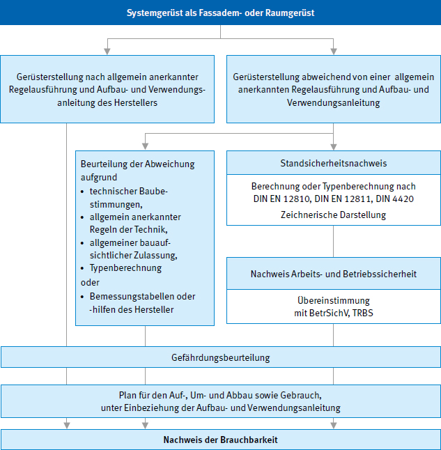
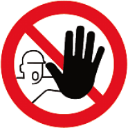
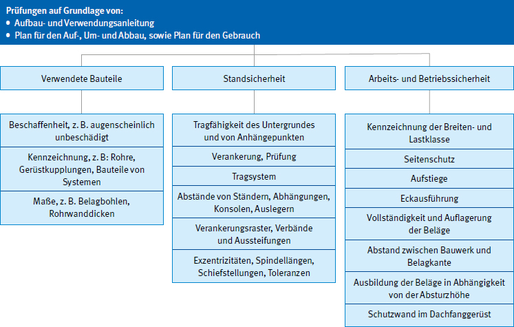

Bei einer Gefährdungsbeurteilung ermittelt und bewertet die Unternehmerin bzw. der Unternehmer die Gefährdungen für ihre bzw. seine Beschäftigten, die sich im Rahmen ihrer Tätigkeit aufgrund des eingesetzten Arbeitsmittels, des gewählten Arbeitsverfahrens und der Arbeitsumgebung ergeben können. Sie hat das Ziel, Maßnahmen festzulegen, um eine Gefährdung für Leben und Gesundheit zu vermeiden und eventuell verbleibende Gefährdungen so gering wie möglich zu halten.
Das Ergebnis der Gefährdungsbeurteilung ist zu dokumentieren und die festgelegten Maßnahmen sind auf ihre Wirksamkeit zu prüfen.
Siehe § 5 ArbSchG und TRBS 1111.

www.bgbau.de
Suchwort: Gefährdungsbeurteilung
Gefährdungen bei Gerüstbauarbeiten können sich beispielsweise ergeben durch:
Die beim Beurteilen der Gefährdungen gewonnenen Erkenntnisse bilden die Basis für das Festlegen der erforderlichen Maßnahmen für die Sicherheit und Gesundheit der Beschäftigten. Die Maßnahmen müssen dem Stand der Technik, Arbeitsmedizin und Hygiene sowie den Anforderungen der Ergonomie entsprechen. Gesicherte arbeitswissenschaftliche Erkenntnisse, rechtsverbindliche Anforderungen in Gesetzen, Verordnungen und Vorschriften sind zu berücksichtigen. Die Maßnahmen müssen geeignet sein, die ermittelten Gefährdungen zu beseitigen bzw. so weit zu reduzieren, dass das Schutzziel erreicht wird.
Werden die in den Technischen Regeln für Arbeits- und Gesundheitsschutz genannten Maßnahmen eingehalten, so ist davon auszugehen, dass die Schutzziele erreicht werden. Es gilt dann die Vermutungswirkung, siehe z. B. TRBS 2121, Allgemeiner Teil und Teil 1.
Weicht die Unternehmerin bzw. der Unternehmer von den in den Technischen Regeln genannten Maßnahmen ab oder fehlen diese, muss er bzw. sie durch andere Maßnahmen mindestens die gleiche Sicherheit und den gleichen Schutz der Gesundheit der Beschäftigten erreichen. In diesem Fall ist eine Vorgehensweise entsprechend der Rangfolge der Schutzmaßnahmen nach § 4 ArbSchG anzuwenden.
Rangfolge der Schutzmaßnahmen
Bei der Auswahl der Maßnahmen hat der Unternehmer bzw. die Unternehmerin den im ArbSchG festgelegten Grundsatz der Vermeidung von Gefährdungen zu prüfen und wenn möglich umzusetzen. Beim Festlegen von Maßnahmen ist die Rangfolge der Schutzmaßnahmen nach § 4 ArbSchG zu berücksichtigen, technische Maßnahmen sind zu bevorzugen. Die Ergebnisse sind zu dokumentieren und die Maßnahmen auf ihre Wirksamkeit zu kontrollieren.

Abb. 3 Rangfolge der Schutzmaßnahmen bei der Erstellung von Gerüsten
Der Unternehmer bzw. die Unternehmerin unterweist seine bzw. ihre Beschäftigten über das Ergebnis der Gefährdungsbeurteilung. Die Unterweisung der Beschäftigten hinsichtlich der möglicherweise verbleibenden Gefährdungen sowie ggf. der Auswirkung der festgelegten Maßnahme bzw. deren Umsetzung ist integraler Bestandteil der jeweiligen Maßnahme.
Die Unterweisung umfasst Anweisungen und Erläuterungen, die eigens auf den Arbeitsplatz oder den Aufgabenbereich der Beschäftigten ausgerichtet sind. Der Nachweis der Unterweisung wird dokumentiert.
Zur Unterweisung gehören beispielsweise Erläuterungen und Informationen
Vor der Benutzung von persönlichen Schutzausrüstung gegen Absturz ist eine besondere Unterweisung auch mit praktischen Übungen erforderlich, siehe Abschnitt 4.7.3.
Der Unternehmer bzw. die Unternehmerin, der bzw. die Gerüste erstellt, ist für den sicheren Auf-, Um- und Abbau sowie deren sichere Lagerung, Transport und die Prüfung nach der Montage der Gerüste verantwortlich.
Gerüstersteller haben die von Auftraggebern planerisch, statisch und organisatorisch vorgesehenen Maßnahmen zu berücksichtigen. Dabei ist auch die Eignung des ausgewählten Gerüstes für den vorgesehenen Verwendungszweck insbesondere unter Berücksichtigung der vorgegebenen Last- und Breitenklassen zu überprüfen, siehe Abschnitt 6.1.
Bestehen Bedenken gegen die vorgesehene Art der Ausführung, insbesondere hinsichtlich der Sicherung gegen Unfallgefahren, so sind diese den Auftraggebern unverzüglich – möglichst schon vor Beginn der Arbeiten – schriftlich mitzuteilen.
Der Unternehmer bzw. die Unternehmerin hat in seiner bzw. ihrer Funktion als Arbeitgeber bzw. Arbeitgeberin die geeignete persönliche Schutzausrüstung nach Gefährdungsbeurteilung zur Verfügung zu stellen. Hierzu gehören z. B. Sicherheitsschuhe, Gehör-, Hand- und solarer UV-Schutz sowie persönliche Schutzausrüstungen gegen Absturz und Schutzhelme.
Übernimmt der gerüsterstellende Unternehmer bzw. die Unternehmerin einen Auftrag, dessen oder deren Durchführung zeitlich und örtlich mit Aufträgen anderer Unternehmen zusammenfällt, ist er bzw. sie verpflichtet, sich mit den anderen Unternehmen abzustimmen, soweit dies zur Vermeidung gegenseitiger Gefährdungen erforderlich ist.
Siehe § 8 (1) ArbSchG, § 6 DGUV Vorschrift 1 i. V. m. § 3 BetrSichV.
Die Unternehmerin bzw. der Unternehmer hat sicherzustellen, dass in jeder Arbeitskolonne mindestens eine Ersthelferin bzw. ein Ersthelfer vorhanden ist. Des Weiteren müssen Mittel zur Ersten Hilfe jederzeit schnell erreichbar und leicht zugänglich sowie Alarm- und Meldeeinrichtungen, z. B. Telefon, vorhanden sein.
Siehe § 26 DGUV Vorschrift 1, 8 ASR A4.3 und DGUV Information 204-022 "Erste Hilfe im Betrieb".
Weiterhin müssen für die Erste Hilfe und zur Rettung aus Gefahr nach dem Rettungskonzept die erforderlichen Einrichtungen und Sachmittel sowie das erforderliche geschulte bzw. unterwiesene Personal zur Verfügung stehen.
Siehe DGUV Information 204-011 "Erste Hilfe Hängetrauma".
Die Brauchbarkeit eines Gerüstes ist durch den Standsicherheitsnachweis und den Plan für den Auf-, Um- und Abbau nachzuweisen, sofern das Gerüst nicht nach einer allgemein anerkannten Regelausführung (siehe Abschnitt 2.1) erstellt wird. Hier ist ein Standsicherheitsnachweis (Festigkeits- und Standfestigkeitsberechnung) auf Grundlage der in der Muster-Verwaltungsvorschrift Technische Baubestimmungen (MVV TB) genannten Technischen Baubestimmungen der Länder zu erbringen.
Für eine allgemein anerkannte Regelausführung gilt der Standsicherheitsnachweis z. B. als erbracht, wenn eine allgemeine bauaufsichtliche Zulassung für das jeweilige Gerüstsystem durch das Deutsche Institut für Bautechnik (DIBt) erteilt wurde, ein allgemeines bauaufsichtliches Prüfzeugnis oder eine Zustimmung im Einzelfall auf Grundlage der Bauordnungen der Länder vorliegt oder eine Gerüstkonfiguration nach DIN 4420-3 errichtet wurde.
Der Standsicherheitsnachweis kann auch unter Zuhilfenahme von Bemessungstabellen oder Bemessungshilfen, die auf Grundlage der in der MVV TB genannten Technischen Baubestimmungen erstellt wurden, erbracht werden.
Sofern in der jeweiligen Landesbauordnung gefordert, sind Gerüstsysteme mit einer gültigen, allgemeinen bauaufsichtlichen Zulassung zu verwenden.

Abb. 4 Nachweis der Brauchbarkeit
Der Gerüstersteller hat je nach Komplexität des Gerüstes einen Plan für den Auf-, Um- und Abbau (Montageanweisung) zu erstellen oder durch eine von ihm beauftragte fachkundige Person erstellen zu lassen.
Vgl. § 4 DGUV Vorschrift 38.
Die Montageanweisung soll insbesondere folgende Angaben enthalten:
Die Montageanweisungen müssen der fachkundigen Person, welche die Gerüstarbeiten beaufsichtigt, und den Beschäftigten am Verwendungsort vorliegen.
Die Montageanweisungen sind im Rahmen der Unterweisungen den mit Gerüstbauarbeiten beauftragten Beschäftigten zu erläutern.
Siehe Anhang 7.1 "Beispiel Montageanweisung"
Gerüstbauteile sind so zu transportieren und zu lagern, dass
Um sicherzustellen, dass keine beschädigten Teile verwendet werden, sollten alle Gerüstbauteile vor dem Einbau auf augenscheinliche Mängel geprüft werden.
Sind bestimmte Bereiche eines Gerüsts nicht verwendbar, z. B. während Auf-, Um- oder Abbauarbeiten, sind diese Bereiche mit dem Verbotszeichen D-P006 "Zutritt für Unbefugte verboten" zu kennzeichnen und durch Absperrungen, die den Zugang zu diesen Teilen verhindern, angemessen abzugrenzen.
Bereiche, in denen Personen durch herabfallende, umstürzende, abgleitende oder abrollende Gegenstände gefährdet werden können, dürfen nicht betreten werden. Der Unternehmer bzw. die Unternehmerin bzw. die Vorgesetzten nach § 3 (1) DGUV Vorschrift 38 muss diese Bereiche festlegen. Sie sind zu kennzeichnen und abzusperren oder durch fachkundige Personen mit Sicherungsaufgaben zu sichern.
Anforderungen an Personen mit Sicherungsaufgaben siehe § 3 (3) DGUV Vorschrift 38, siehe auch § 6 BetrSichV.
Vor Beginn der Arbeiten ist zu klären, ob Maßnahmen zur Sicherung des öffentlichen Verkehrsraumes erforderlich sind. Ist dies der Fall, sind im Einvernehmen mit den Eigentümern bzw. Eigentümerinnen oder Betreibern bzw. Betreiberinnen der einzurüstenden baulichen Anlage bzw. den zuständigen Behörden Sicherungsmaßnahmen festzulegen. Öffentliche Anlagen (z. B. Feuermelder, Kabelschächte, Hydranten) müssen zugänglich bleiben.
Wenn sich die Arbeiten auf den öffentlichen Straßenverkehr auswirken, ist vor Beginn der Arbeiten zu klären, ob erforderliche verkehrsrechtliche Genehmigungen eingeholt wurden, siehe § 45 (6) StVO. Sind im vorgesehenen Arbeitsbereich Anlagen wie elektrische Anlagen (Freileitungen, Fahrleitungsanlagen), Kran- und Förderanlagen oder maschinelle Einrichtungen vorhanden, ist § 6 der DGUV Vorschrift 38 "Bauarbeiten" und die DGUV Regel 101-038 zur DGUV Vorschrift 38 zu beachten.
Sind bei Arbeiten am, auf oder über dem Wasser bzw. Stoffen, in denen man versinken kann, keine technischen Schutzmaßnahmen gegen Absturz möglich, besteht die Gefahr des Ertrinkens. Zur Auswahl der geeigneten Rettungsmittel und persönlicher Schutzausrüstungen siehe § 8 (6) DGUV Regel 101-038 "Bauarbeiten" und Baustein C 480 der BG BAU.

Abb. 5 Kennzeichnung D-P006 "Zutritt für Unbefugte Verboten"
Gerüste müssen auf einem ausreichend tragfähigen Aufstellgrund, der alle daraus resultierenden Lasten sicher aufnehmen kann, aufgestellt werden (vgl. § 5 DGUV Vorschrift 38). Sie müssen immer auf Fußplatten oder Fußspindeln und lastverteilenden Unterlagen aufgestellt werden.
Bei der Auswahl der lastverteilenden Unterlagen sind die Bodenbeschaffenheit (z. B. Beton, Straßenpflaster oder gewachsener Boden) sowie die in der Statik oder Aufbau- und Verwendungsanleitung des Herstellers angegebenen Stiellasten (Fundamentlasten) maßgeblich.
Die Tragfähigkeit des Untergrundes kann z. B. beeinträchtigt sein durch Schächte, Kanäle, Zisternen, unzureichend verdichteter Baugrund, Nähe zu Böschungen von Baugruben und Gräben.
Angaben zur Tragfähigkeit von Untergründen (z. B. verfüllte Aufstandsflächen, Dachkonstruktionen) sind im Einzelfall durch den Bauherren bzw. die Bauherrin nachzuweisen.
Baustoffe wie Mauersteine sind als Unterlage ungeeignet.
Bei schrägem Untergrund ist die Aufstellfläche so auszubilden, dass der Gerüstfuß mit lastverteilenden Belägen vollflächig aufgesetzt werden kann.
Wird das Gerüst mit einer Gerüsthöhe (Belaghöhe über Aufstellfläche) von mehr als drei Gerüstlagen (außer bei Einfamilienhäusern, Gebäudeklasse 1a oder 2) errichtet oder bei einer Längenabwicklung des Gerüstes bis 10 m und einer Gerüsthöhe mehr als 14 m, müssen für den Vertikaltransport geeignete Arbeitsmittel wie z. B. Krane, Bauaufzüge und Seilrollenaufzüge mit hierfür abgestimmten Lastaufnahmemitteln zum Heben von Lasten, zur Anwendung kommen.
Werden hand- oder motorbetriebene Seilrollenaufzüge verwendet, so ist darauf zu achten, dass diese über Vorrichtungen verfügen, die den Lastabsturz verhindern.
Bei dem vertikalen Handtransport von Gerüstbauteilen muss in dem jeweiligen Gerüstabschnitt in den Gerüstfeldern mindestens ein zweiteiliger Seitenschutz (bestehend aus Geländer und Zwischenholm) vorhanden sein.
Hinweis: Dies gilt auch für die oberste Gerüstlage.
Beim vertikalen Handtransport muss in jeder Gerüstlage eine Person im gesicherten Gerüstfeld (zweiteiliger Seitenschutz) stehen.
Beim horizontalen Handtransport innerhalb einer Gerüstlage sind Absturzsicherungen gemäß Rangfolge der Schutzmaßnahmen erforderlich, siehe Abschnitt 4.7.1.
Beim Abbau des Gerüstes dürfen Gerüstbauteile nicht abgeworfen werden. Fallende Gerüstbauteile können andere Personen gefährden und selbst durch Beschädigung unbrauchbar werden.
Siehe Bausteine B 141 und B 143 der BG BAU zur Ladestellensicherung von Aufzügen.
Beim Auf-, Um- und Abbau von Gerüsten müssen Beschäftigte gegen Absturz geschützt sein. Die Sicherungsmaßnahmen werden im Rahmen der Gefährdungsbeurteilung festgelegt. Dabei ist die Rangfolge der Schutzmaßnahmen zu beachten, siehe Abschnitt 4.1.2.
Maßnahmen zum Schutz gegen Absturz sind dann nicht erforderlich, wenn der horizontale Abstand zwischen der Kante der Belagfläche des Gerüstes und einer tragfähigen und ausreichend großen Fläche des Bauwerkes nicht mehr als 0,30 m beträgt.
Auf der obersten Gerüstlage ist für den Horizontaltransport von Gerüstbauteilen bei durchgehender Gerüstflucht mindestens ein einteiliger Seitenschutz je Gerüstfeld zu verwenden, sofern nicht bauliche Gegebenheiten, wie z. B. Balkone, Erker oder besondere Gerüstbauarten, wie z. B. Hänge- oder Raumgerüst, diese Maßnahme der Absturzsicherung nicht ermöglichen.
Wird der Gerüstabschnitt erst ab einer bestimmten Höhe unterbrochen (z. B. Dachvorsprung, Gesims), ist bis dahin und danach die technische Schutzmaßnahme zu verwenden.
Anforderungen an den Seitenschutz können z. B. den Aufbau- und Verwendungsanleitungen der Gerüsthersteller oder DIN EN 12811-1, DIN 4420-1 entnommen werden.

Abb. 6 Beispiel für einen vorlaufenden, systemimmanenten oder -integrierten Seitenschutz

Abb. 7 Beispiel für einen vorlaufenden, systemimmanenten oder -integrierten Seitenschutz
Der Seitenschutz bei der Montage bzw. Demontage kann als Bauteil bzw. technische Schutzvorrichtung, welche beim Auf-, Um- und Abbau im Gerüst verbleibt (systemimmanent bzw. -integriert), als Montagesicherungsgeländer (MSG) oder durch den bereits montierten Seitenschutz ausgeführt sein. Bei Gerüstendfeldern ist dabei auch die Stirnseite gegen Absturz zu sichern.
Sind Absturzsicherungen nicht möglich, können Auffangeinrichtungen bei speziellen baulichen Gegebenheiten, wie beispielsweise Gerüsten auf Kranbahnen oder Öffnungen im Gebäude unterhalb der Gerüsterstellung, verwendet werden.
Die Auffangeinrichtung ist als Schutzgerüst oder Schutznetz auszuführen.
Anforderungen an ein Schutzgerüst sind z. B. in DIN 4420-1 beschrieben, Anforderungen zu Schutznetzen können z. B. DIN EN 1263-1 entnommen werden. Hinweise zu Schutznetzen siehe DGUV Regel 101-011 "Einsatz von Schutznetzen (Sicherheitsnetzen)".

Abb. 8 Beispiel einer Auffangeinrichtung
Ist eine technische Schutzmaßnahme aufgrund des einzurüstenden Objekts oder der Gerüstbauart nicht möglich, ist als personenbezogene Schutzmaßnahme eine geeignete persönliche Schutzausrüstung gegen Absturz (PSA gegen Absturz) zu verwenden.
Der Unternehmer bzw. die Unternehmerin hat für die bestimmungsgemäße Benutzung der PSA gegen Absturz zu sorgen. Dies setzt folgendes voraus:
Vgl. § 31 DGUV Vorschrift 1 "Grundsätze der Prävention".
Ein Muster für eine Betriebsanweisung für die Benutzung eines Auffangsystems für Arbeiten im Gerüstbau zeigt Anhang 7.4, siehe auch DGUV Regel 112-198 "Benutzung von persönlichen Schutzausrüstungen gegen Absturz".
Im Rettungskonzept und in der Gefährdungsbeurteilung ist u. a. die Verletzungsgefahr, z. B. durch Anprallen oder Hängetrauma, zu berücksichtigen.
Hinweise für geeignete Anschlagpunkte können z. B. der Aufbau- und Verwendungsanleitung des jeweiligen Gerüstherstellers sowie der Gebrauchsanleitung des Herstellers der PSA gegen Absturz entnommen werden. Sind keine geeigneten Anschlagpunkte ausgewiesen, sind diese im Einzelfall zu bestimmen und nachzuweisen. Geeignete Anschlagpunkte für PSA gegen Absturz sollten grundsätzlich oberhalb des oder der Beschäftigten, bei längenorientierten Arbeits- und Schutzgerüsten mindestens jedoch in 1 m Höhe über der Standfläche des oder der Beschäftigten, angeordnet sein.
Anschlagpunkte sind vom Unternehmer bzw. der Unternehmerin festzulegen, siehe auch DGUV Regel 112-198 "Benutzung von persönlichen Schutzausrüstungen gegen Absturz".
Ein Muster für eine Betriebsanweisung zur Benutzung von PSA zum Retten aus Höhen und Tiefen für Arbeiten im Gerüstbau zeigt Anhang 7.5.
Weitere Hinweise siehe DGUV Regel 112-199 "Benutzung von persönlichen Schutzausrüstungen zum Retten aus Höhen und Tiefen".
Bei der Benutzung von PSA gegen Absturz ist ein Schutzhelm mit Kinnriemen zu verwenden. Dieser muss den Anforderungen nach DIN EN 397 entsprechen.
Vgl. Abschnitt 4.2.4 der TRBS 2121-1 und DGUV Regel 112-193 "Benutzung von Kopfschutz".
Arbeitsplätze und Verkehrswege müssen ein sicheres Arbeiten und Begehen ermöglichen. Der Unternehmer bzw. die Unternehmerin hat dafür zu sorgen, dass nur tragfähige Arbeitsplätze und Verkehrswege genutzt werden. Bei Arbeitsplätzen und Verkehrswegen auf nicht begehbaren Bauteilen müssen geeignete Maßnahmen vorhanden sein, die ein Durchbrechen und Abstürzen von Personen verhindern.
Siehe DGUV Vorschrift 38 "Bauarbeiten", § 8 ff.
Tragfähigkeit von vertikalen Flächen
Eine vertikale Fläche des Bauwerkes kann als tragfähig angesehen werden, wenn sie den Anforderungen für Seitenschutz nach DIN EN 12811-1 entspricht.
Eine vertikale verglaste Fläche des Bauwerkes kann als tragfähig angesehen werden, wenn sie den Anforderungen für Verglasungen nach DIN 18008-4 entspricht.
Tragfähigkeit von horizontalen Flächen
Horizontale Flächen des Bauwerkes, die für die Gerüstbauarbeiten
Nicht begehbare bzw. nicht durchsturzsichere horizontale Flächen können z. B. aus PVC-Platten, Glasplatten, Faserzementplatten, Lichtkuppeln oder -bändern bestehen.
Eine Fläche gilt z. B. dann als durchsturzsicher (jedoch nicht als begehbar), wenn sie nach dem DGUV-Prüfgrundsatz GS-BAU 18 "Grundsätze für die Prüfung und Zertifizierung der Durchsturzsicherheit von Bauteilen bei Bau- oder Instandhaltungsarbeiten" geprüft worden ist.
Begehbare Bauteile sind alle Bauteile, für die der Hersteller ausdrücklich eine Begehbarkeit bestätigt hat oder für die eine statische Berechnung vorliegt, welche die Begehbarkeit berücksichtigt.
Die Unterlage für spätere Arbeiten nach BaustellV enthält in der Regel entsprechende Informationen.
Arbeitsplätze auf Gerüsten müssen über sichere Zugänge oder Aufstiege erreichbar sein. Diese müssen mindestens alle 50 m angemessen ergonomisch und sicher begangen werden können, siehe Abschnitt 5.3 bzw. TRBS 2121-1.
Während der Gerüstmontage (Auf-, Um- und Abbau) ist der Zugang für den Gerüstersteller über innenliegende Leitern zulässig.
Siehe TRBS 2121-1; weitere Hinweise siehe Baustein C 357 "Zugänge zu Gerüsten für Gerüstbauarbeiten und Gerüstnutzung" der BG BAU.
Bestehen Bedenken gegen die vorgegebene Art der Zugänge, sind diese den Auftraggebern unverzüglich – möglichst schon vor Beginn der Arbeiten – schriftlich mitzuteilen, siehe 3.2.
Der Auf- und Abbau des Aufzugs bzw. der Transportbühne erfolgt nach Angaben des Herstellers. Hierbei ist die Aufbau-, Montage- bzw. Betriebsanleitung zu beachten. Fehlende Angaben für den sicheren Auf-, Um- und Abbau sind in einer speziell für das Vorhaben angefertigten Montageanweisung zu berücksichtigen. Diese Dokumente müssen bei den Montagearbeiten vor Ort vorhanden sein.
Die Übergangsstellen vom Gerüst zum Aufzug bzw. zur Transportbühne sind sicher auszubilden, so dass immer ein Seitenschutz, z. B. Ladestellensicherung, vorhanden ist, wenn sich der Aufzug bzw. die Transportbühne nicht an der Übergangsstelle befindet.
Siehe Bausteine B 141 und B 143 der BG BAU zur Ladestellensicherung von Aufzügen.
Beim Auf- und Abbau von Gerüsttreppen oder Treppentürmen als Zugang ist die Aufbau- und Verwendungsanleitung des Herstellers zu beachten.
Freistehende Treppen aus Gerüstbauteilen, die bei Bauarbeiten, z. B. als Zugang zu Dachflächen oder Baugruben, genutzt werden sollen, müssen geprüft und gekennzeichnet werden, siehe Abschnitt 4.10 "Prüfung nach Fertigstellung". Zugänge mit gegenläufigen Treppen sind innen und außen mit einem zweiteiligen Seitenschutz auszubilden. Zugänge mit gleichlaufenden Treppen sind außen mit einem zweiteiligen Seitenschutz und im Bereich des Gerüstbelages mit einem Umlaufgeländer auszubilden, so dass nur eine Öffnung am Zugang zur Treppe vorhanden ist.
Bei Arbeitsbereichen, die an Treppenzugänge angrenzen, sind an der treppenzugewandten Seite ausreichende Absturzsicherungen zu montieren.
Werden Gerüstleitern als Aufstiege verwendet, müssen systemgebundene Gerüstinnenleitern eingebaut werden.
Als Zugänge für Gerüstnutzer sind innenliegende Leitern bis zur einer Aufstiegshöhe von 5,00 m nur zulässig, wenn z. B. bauliche Gegebenheiten wie Platzmangel oder statische Gegebenheiten den Zugang für Gerüstnutzer über Aufzüge, Transportbühnen oder Treppen verhindern.
Siehe Aufbau- und Verwendungsanleitung des jeweiligen Gerüstes.
In besonders begründeten Ausnahmefällen ist der Zu- oder Abgang über von außen angebrachte Leitern bis zu einer Aufstiegshöhe von maximal 5,00 m zulässig, z. B. bei Stahlrohr-Kupplungs-, Modul- oder Raumgerüsten. Die vom Gerüstersteller angebrachte und am Gerüst verbleibende Leiter ist gegen Wegrutschen und Umkippen an dem Gerüst zu sichern und muss mindestens 1,00 m über die Austrittsstelle hinausragen, sofern nicht andere Vorrichtungen ein sicheres Festhalten erlauben.
Die Verankerungskräfte und die Lage der Verankerung sind der Aufbau- und Verwendungsanleitung, der Montageanweisung oder der statischen Berechnung zu entnehmen.
Vgl. § 5 (1) DGUV Vorschrift 38.
Verankerungen sind fortlaufend mit dem Gerüstaufbau einzubauen und fortlaufend mit dem Gerüstabbau auszubauen.
Ungeeignete Befestigungen sind z. B. Rödeldrähte, Kabelbinder, Stricke, kraftschlüssige Einspindelungen in Laibungen.
Werden die tragenden Bauteile einer Außenwand mit Fassadenkonstruktionen versehen, die keine Verankerungskräfte für Gerüste aufnehmen können, ist die Verankerung der Gerüste an bauseits vorhandenen dauerhaften Vorrichtungen (z. B. Daueranker), siehe DIN 4426 oder andere Maßnahmen nach Abschnitt 4.9.2, vorzunehmen. In diesem Fall sind Informationen von der oder von dem Auftraggebenden oder von der Planerin oder von dem Planer bereitzustellen und eine Abstimmung vorzunehmen.
Die Verankerungskräfte müssen über Gerüsthalter und Befestigungsmittel in einen ausreichend tragfähigen Verankerungsgrund (z. B. Bauwerk) eingeleitet werden.
Ausreichend tragfähige Verankerungsgründe sind z. B.
Nicht ausreichend tragfähige Verankerungsgründe sind z. B. Schneefanggitter, Blitzableiter, Fallrohre, Fensterrahmen.
Für den Nachweis der Verankerungskräfte muss die Tragfähigkeit der Befestigungsmittel (z. B. Dübel und Schraube) zwischen Gerüsthalter und Verankerungsgrund nachgewiesen werden durch
oder
Werden zur Verankerung Befestigungsmittel mit Bauartzulassung verwendet, sind die Herstellerangaben zu beachten (Nachweis Verankerungsgrund, Einbauanweisung, ggfs. Probebelastungen).
Auf den Nachweis der Tragfähigkeit darf verzichtet werden, wenn
und
oder
Die Gerüstverankerung an z. B. vorgehangenen-, zweischaligen Fassaden sowie Fassaden mit Wärmedämm-Verbundsystemen (WDVS) muss insbesondere bei der Planung und Ausschreibung berücksichtigt werden.
Bei Fassadenbekleidungen aus nicht tragfähigen Materialien an Fassaden können Gerüste wegen des großen Abstandes zum tragfähigen Untergrund in der Regel nicht mit üblichen Verankerungselementen wie kurzen Ringösenschrauben verankert werden. An deren Stelle müssen z. B. konfektionierte, temporäre Sondergerüstanker oder Daueranker eingesetzt werden, hierbei ist die Gebrauchs- bzw. Montageanleitung zu beachten. Möglich sind auch Ballastierungen und konstruktive Aussteifungen; bei diesen ist der Standsicherheitsnachweis zu beachten.
Sind Probebelastungen erforderlich, müssen diese an der Verwendungsstelle durchgeführt werden.
Verankerungspunkte, an denen Probebelastungen durchzuführen sind, müssen von einer hierzu befähigten Person nach Anzahl und Lage bestimmt werden.
Die Probebelastungen sind nach den folgenden Kriterien durchzuführen:
aller verwendeten Dübel, jedoch mindestens 5 Probebelastungen, umfassen.
Zum Durchführen der Probebelastungen müssen geeignete Prüfgeräte verwendet werden.
Nehmen einzelne oder mehrere Befestigungsmittel die Probelast nicht auf, hat die zur Prüfung befähigte Person
Die Prüfergebnisse sind zu dokumentieren und mindestens für die Dauer der Standzeit des Gerüstes aufzubewahren.
Zur Dokumentation wird die Vorlage in Anhang 7.2 empfohlen.
Prüfung nach Fertigstellung gemäß § 14 (1) BetrSichV
Ist das Gerüst fertig montiert, muss der Unternehmer bzw. die Unternehmerin, der bzw. die das Gerüst erstellt hat, dieses auf die ordnungsgemäße Montage und die sichere Funktion prüfen lassen, siehe TRBS 1201. Die Prüfung darf nur von einer zur Prüfung befähigten Person durchgeführt werden. Dies kann auch die fachkundige Person (2.3) sein, wenn sie die erforderlichen Kenntnisse und Fertigkeiten besitzt.
Nach Fertigstellung und Prüfung ist das Gerüst an gut sichtbarer Stelle (sinnvoller Weise am Zugang) zu kennzeichnen, siehe Beispiel Abb. 10. Die Kennzeichnung hat mindestens folgende Angaben zu enthalten (siehe Anhang 7.3):
Das Ergebnis von Prüfungen ist aufzuzeichnen. Die Aufzeichnungen sind am Einsatzort mindestens bis zur nächsten Prüfung aufzubewahren (§ 14 Absatz 7 BetrSichV).
Plan für den Gebrauch
Gerüstersteller haben den Plan für den Gebrauch zur Verfügung zu stellen.
Der Plan für den Gebrauch kann durch eine vom Unternehmer bzw. von der Unternehmerin beauftragte fachkundige Person erarbeitet werden. Dabei kann es sich um eine allgemeine Aufbau- und Verwendungsanleitung handeln, die durch Detailangaben für das jeweilige Gerüst ergänzt wird.
Der Plan für den Gebrauch muss insbesondere enthalten
Der Plan für den Gebrauch wird nach Fertigstellung des Gerüstes der auftraggebenden Person bzw. dem Gerüstnutzer des Gerüstes übergeben. Hierfür kann z. B. das Prüfprotokoll mit der Kennzeichnung nach Anhang 7.3 gemeinsam mit den Warnhinweisen nach Anhang 7.6 verwendet werden.
Die allgemeinen Warnhinweise können auch in Form von Piktogrammen am Gerüst angebracht werden.
Das Prüfprotokoll, die Kennzeichnung und der Plan für den Gebrauch können in einem Dokument zusammengefasst werden. Dieses Dokument soll geschützt vor Witterungseinflüssen für die Dauer der Standzeit am Treppenaufstieg oder Leitergang angebracht werden (siehe Abb. 9).

Abb. 9 Beispiel für die Prüfung von Arbeits-, Schutz- und Montagegerüsten
Prüfung nach außergewöhnlichen Ereignissen
Nach außergewöhnlichen Ereignissen muss ein Gerüst von einer zur Prüfung befähigten Person erneut geprüft und freigegeben werden, siehe 5.4 TRBS 2121-1 und 5.5.

Abb. 10 Beispiel für die Anbringung des Prüfprotokolls, der Kennzeichnung und des Planes für den Gebrauch am Gerüst nach Anhang 7.3